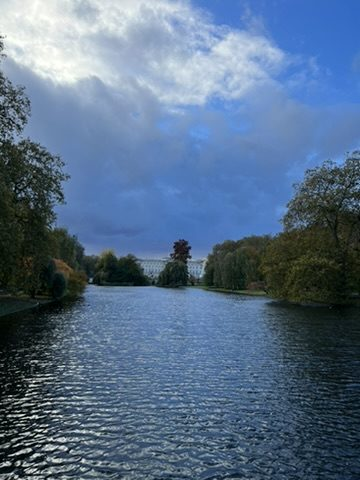

Architecture
The first mood was old stone and city scale.
London is an easy place to start a trip because the city already feels layered before you do anything complicated. The photos here are mostly buildings and small walking stops, which is honestly a good way to ease into a longer route.


The London chapter stays intentionally simple: architecture, water, and a few meals before the trip gets colder up north.